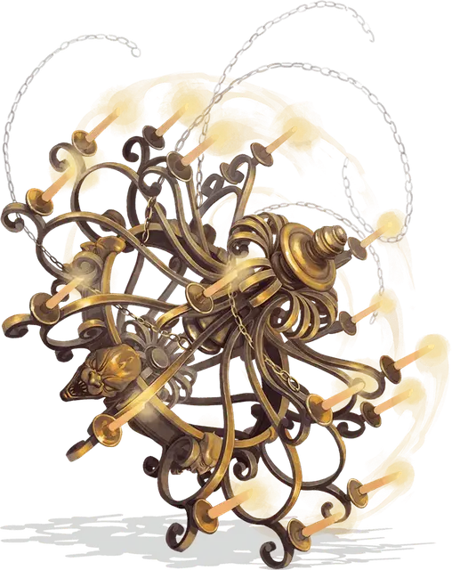

Люстра вращения
Whirling Chandelier
Большой Конструкт, без мировоззрения

Класс Доспеха 13 (природный доспех)
Хиты 105 (14к10 + 28)
Скорость 30 футов, летая 30 футов (парит)
| мод | спас | ||
|---|---|---|---|
| СИЛ | 18 | +4 | +4 |
| ЛОВ | 15 | +2 | +2 |
| ТЕЛ | 15 | +2 | +2 |
| мод | спас | ||
|---|---|---|---|
| ИНТ | 3 | −4 | −4 |
| МДР | 5 | −3 | −3 |
| ХАР | 1 | −5 | −5 |
Сопротивление урону огонь
Иммунитет к урону психическая энергия, яд
Иммунитет к состояниям глухота, испуг, истощение, окаменение, ослепление, отравление, очарование, паралич
Чувства слепое зрение 60 футов (слеп за пределами этого радиуса), пассивное Восприятие 7
Языки понимает общий, но не говорит
Опасность 8 (3900 опыта)
Бонус мастерства +3
Особенности
Обманчивая внешность. Если люстра вращения не движется в начале боя, то она имеет преимущество на бросок инициативы. Более того, если существо не видело движений или действий люстры, это существо должно преуспеть в проверке Интеллекта (Расследование) Сл 18, чтобы понять, что она живая.
Пламенная аура. Любое существо, которое начинает свой ход в пределах 5 футов от люстры, получает 7 (2к6) урона огнём.
Действия
Мультиатака. Люстра совершает три атаки Цепью или Лампой, или любой их комбинацией.
Цепь. Рукопашная атака оружием: +7 к попаданию, досягаемость 15 футов, одна цель. Попадание: 13 (2к8 + 4) дробящего урона, и цель должна преуспеть в спасброске Силы Сл 15, иначе он подтягивается в незанятое пространство в пределах 5 футов от люстры.
Лампа. Рукопашная атака оружием: +7 к попаданию, досягаемость 5 футов, одна цель. Попадание: 9 (2к4 + 4) дробящего урона плюс 13 (3к8) урона огнём.
Пылающий вихрь (перезарядка 5-6). Все существа в пределах 20 футов от люстры, не имеющие полного укрытия, должны преуспеть в спасброске Телосложения Сл 14, иначе получая 36 (8к8) урона огнём и становясь ослепленными до начала следующего хода люстры.
Описание
«Как только я переступила порог этого проклятого дома, то поняла, что его хозяева — не просто трактирщики, а люстра не то, чем кажется.» — Самина Крестфарн, горничная из Баровии.
По сравнению с другими оживленными объектами, люстры вращения кажутся капризными личностями. Жертвы обычно воспринимают пылающий вихрь, создаваемый люстрой, как озорство или откровенную злобу, хотя люстра не способна осознать таких понятий. Она принимает тактические решения только для того, чтобы как можно лучше выполнить приказ своего хозяина.